地政学
サンホセは軍を持たない国家の首都として、外交、環境政策、人権、地域統合を扱います。中央アメリカの不安定な歴史の中で、制度の安定を都市の信用に変えてきた場所です。空港と官庁が国の重要な窓口にもなります。
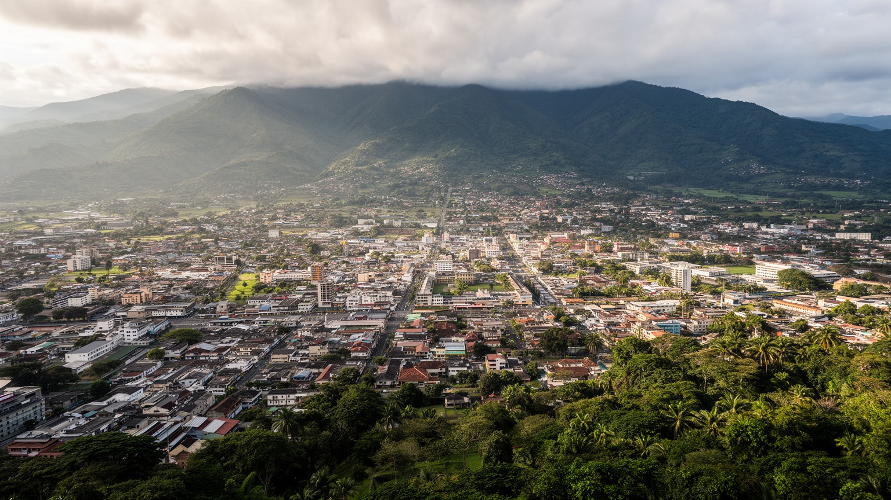
🇨🇷 コスタリカ / 中央アメリカ / World City Atlas
中央盆地の高地に、国会、国立劇場、市場、医療機器産業、大学、移民地区、バスターミナル、国立公園へ向かう観光動線が集まるコスタリカの首都です。
都市の骨格
サンホセは海港都市ではなく、高地の谷に置かれた政治と交通の中心です。官庁、大学、病院、市場、バスターミナル、空港へ向かう幹線が、中央盆地の生活圏を結びます。
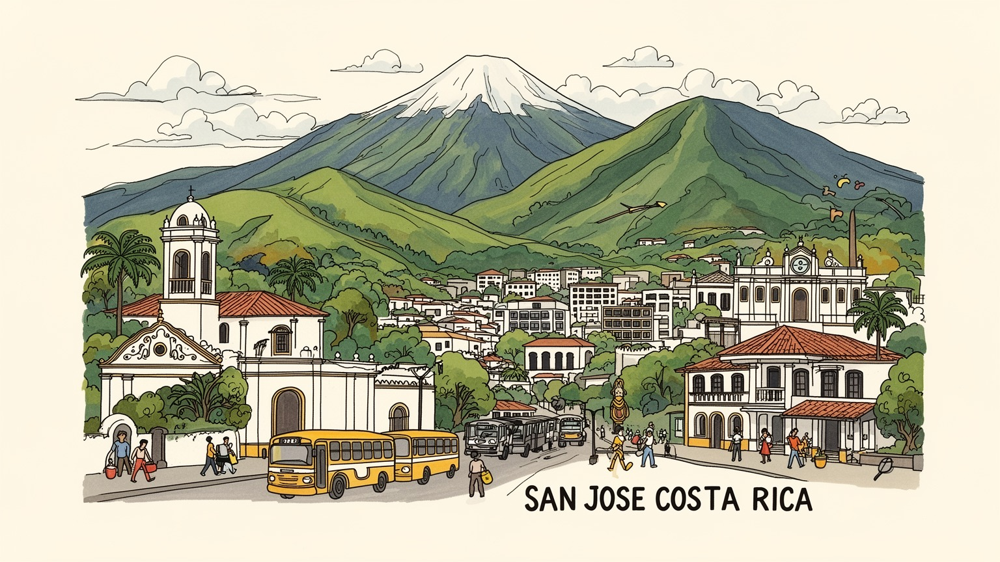
サンホセは軍を持たない国家の首都として、外交、環境政策、人権、地域統合を扱います。中央アメリカの不安定な歴史の中で、制度の安定を都市の信用に変えてきた場所です。空港と官庁が国の重要な窓口にもなります。
官庁、金融、大学、病院、医療機器、ビジネスサービス、観光が雇用を支えます。郊外のフリーゾーンと都心の市場は近く、専門職、清掃、警備、バス運転、露店、夜の食堂、配達の仕事が同じ都市圏で動いています。
カトリックの祭日、福音派教会、大学文化、国立劇場、博物館、サッカー、市場の食が重なります。宗教は政治と家族の価値観にも関わり、移民の礼拝所や小さな商店が都市の文化を広げます。価値観も日々揺れます。
観光客は火山、雲霧林、海岸へ向かう途中で都心を歩きますが、住民には渋滞、治安、家賃、水害、雇用格差が日常です。国立劇場や中央市場の近くで、夜のバス、買い物、学生の声、雨の匂いも生活都市を形づくっています。
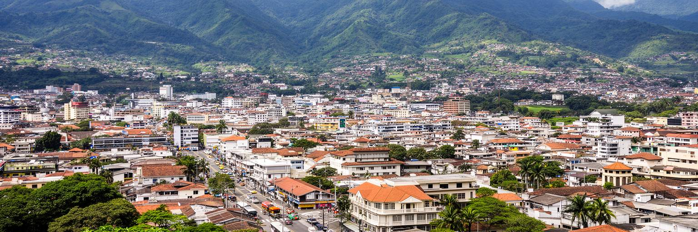
サンホセは中央アメリカの首都としては珍しく、海岸ではなく標高の高い中央盆地にあります。太平洋とカリブ海の港からは離れていますが、国内の行政、教育、医療、金融、交通を束ねる位置にあり、国土の内側からコスタリカを動かします。周囲にはヘレディア、アラフエラ、カルタゴの都市が近く、単独の市域よりも広い首都圏として働きます。谷の気候は比較的涼しく、熱帯の国という外部イメージとは違う日常を作ります。空港は隣接するアラフエラ側にあり、観光客、企業関係者、移民、留学生を首都圏へ流し込みます。都市の中心には国会、裁判所、官庁、国立劇場、中央市場、博物館が集まり、政治と文化の象徴が徒歩圏に置かれています。サンホセの地政学は、海を支配する港湾都市のものではなく、山地、農村、保護区、国境、国際空港をつなぐ内陸の調整役として現れます。国立公園や火山へ向かう観光も、バス、旅行会社、宿泊、両替、保険、都市の治安に支えられています。首都を読むには、都心の建物だけでなく、中央盆地全体の通勤、大学、病院、郊外住宅地、フリーゾーンを見る必要があります。谷に集まる都市機能の密度が、コスタリカの国家運営と日常を同じ場所に重ねています。海岸リゾートの背後で、許認可、保険、病院、学校、金融がここに集まるため、国の外向きの魅力も首都圏の制度に支えられます。
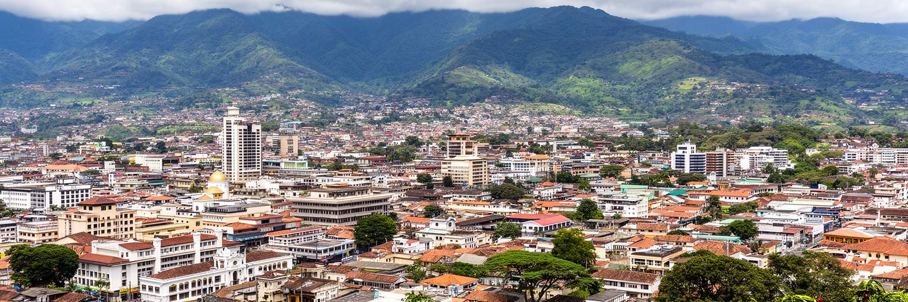
サンホセはコスタリカの民主主義を可視化する舞台です。大統領府、国会、裁判所、選挙機関、大学、新聞、国際機関、大使館が中央盆地に集まり、軍を廃止した国家の政治文化を支えています。周辺国が内戦、軍政、治安危機を経験してきた中で、コスタリカは教育、社会保障、環境政策、外交を国家の信用にしてきました。その理想は首都の街路にも表れます。抗議活動、選挙運動、環境運動、労働争議、女性の権利、宗教的な価値観をめぐる議論が、官庁街、大学、広場、教会の近くで交差します。軍を持たないことは平和な物語だけではなく、警察、司法、社会政策、国際関係へ安全保障の重心を移す選択でもあります。移民、麻薬取引、財政制約、治安不安、格差が強まると、その選択は日常の制度運営で試されます。サンホセの政治都市としての重要性は、巨大な権力の建築ではなく、制度を信頼できるかという市民の感覚にあります。国際社会では人権、環境、多国間主義の発信地として知られますが、首都の住民には通勤、公共サービス、医療、教育、住宅がより近い政治です。理想を掲げる国家の中心が、現実の都市問題をどう扱うかを見ることで、サンホセの首都性が立体的に見えてきます。制度への信頼は自然に続くものではなく、選挙、裁判、学校、病院、税の使い道が身近に納得されることで保たれます。
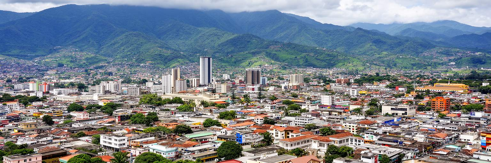
サンホセの経済はコーヒーの首都という古い像だけでは説明できません。中央盆地には医療機器、電子部品、ビジネスサービス、金融、保険、情報技術、コールセンター、大学、病院、行政が集まり、郊外のフリーゾーンは輸出型産業の核になっています。インテルの投資以後、コスタリカは教育水準と政治安定を売りにして高付加価値産業を呼び込み、近年は医療機器が輸出の重要分野になりました。サンホセ都心には銀行、法律、会計、政府手続き、病院、大学が残り、郊外には企業団地、ショッピングモール、住宅地が広がります。この分業は新しい中間層を生む一方、技能を持つ人と不安定なサービス職の差も広げます。英語を使う専門職、病院の技術者、警備員、清掃員、バス運転手、飲食店員、露店商、家事労働者は同じ都市圏で働きますが、賃金、通勤、住宅の条件は大きく違います。観光収入も首都を通りますが、海岸や雲霧林のイメージの背後には、サンホセの旅行会社、保険、空港、宿泊、研修、行政許可があります。都市の経済を読むには、輸出額だけでなく、働く人がどこに住み、どの交通を使い、どの学校で技能を得るかを見る必要があります。中央盆地の競争力は、企業誘致と生活条件の両方で決まります。外資が作る高度な雇用と、都心の小商いが支える現金収入を同じ都市経済として扱う視点が欠かせません。
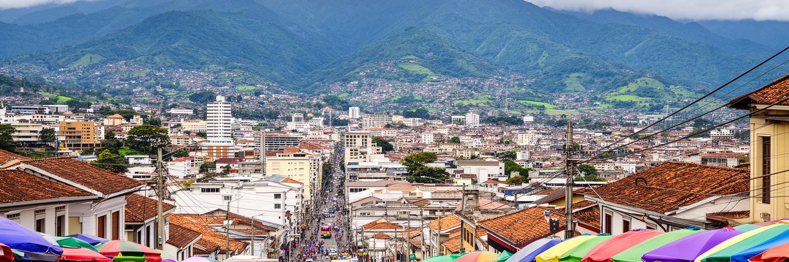
サンホセの都心は、ラテンアメリカの巨大首都のような圧倒的なスケールではありませんが、国の顔としての密度を持っています。国立劇場、文化広場、黄金博物館、翡翠博物館、中央市場、歩行者通り、教会、バスターミナルが近く、観光客と住民が同じ通りを使います。中央市場ではコーヒー、果物、薬草、食堂、肉、日用品、土産物が並び、国の豊かな自然イメージとは別の、働く都市の匂いが残ります。都心の魅力は整った観光地区だけでなく、バスを待つ人、昼食を取る労働者、学校帰りの学生、修理店、古い映画館、露店、路上の音楽が作る混ざり合いにあります。一方で、空洞化、治安不安、ホームレス、薬物、老朽建築、歩道の荒れ、夜間の人通りの少なさも都市の焦点です。郊外のモールや企業団地が成長するほど、都心は象徴的な場所であると同時に、生活の弱さが見える場所になります。観光客が短時間で通り過ぎる中心部にも、低賃金のサービス労働、家族経営の店、公共交通に頼る通勤者の現実があります。サンホセの都心を歩くことは、国家の文化装置と庶民の生活インフラが同じ数ブロックに重なる様子を見ることです。市場と劇場を同時に読むと、都市の公的な顔と台所の顔がつながります。再生の鍵は、観光向けの美化だけでなく、住民が夕方以降も安心して買い物し、働き、帰宅できる街路を増やすことです。
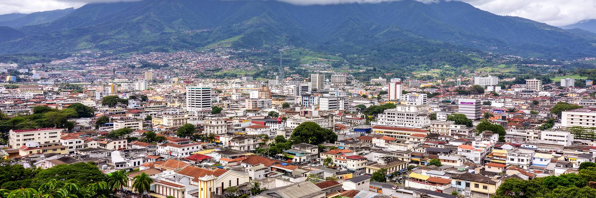
サンホセの宗教生活は、カトリックの教会と祭日を中心にしながら、福音派教会、移民の信仰、世俗的な市民運動が重なる形で変化しています。教会は礼拝の場であるだけでなく、家族、学校、慈善、葬儀、結婚、政治的な価値観に関わる場所です。コスタリカでは教育や医療が国家の誇りとして語られますが、妊娠中絶、同性婚、性教育、貧困支援、移民受け入れをめぐる議論では宗教的な立場も強く現れます。サンホセの街では、古い教会の鐘、福音派の集会、大学の討論、若者の文化、LGBTQの可視化、家族中心の生活が並びます。宗教は都市を保守的に固定するだけでなく、地域の支援、食事提供、相談、災害時の助け合いを担うこともあります。同時に、価値観の違いは政治対立や排除にもつながります。移民地区では、ニカラグア出身者や他国から来た人が教会、商店、学校を通じて生活の足場を作ります。信仰を読むことは、建物を見ることではなく、誰が助けを受け、誰が声を上げにくいのかを読むことです。サンホセの宗教と社会は、平和国家の穏やかなイメージの内側で、家族、性、貧困、移民、世代差をめぐる現実的な交渉を続けています。都市の寛容さは、違いを日常の制度で扱えるかに表れます。礼拝後の食事、学校行事、地域の寄付活動まで見ると、信仰は個人の内面だけでなく、都市の相互扶助の網でもあります。
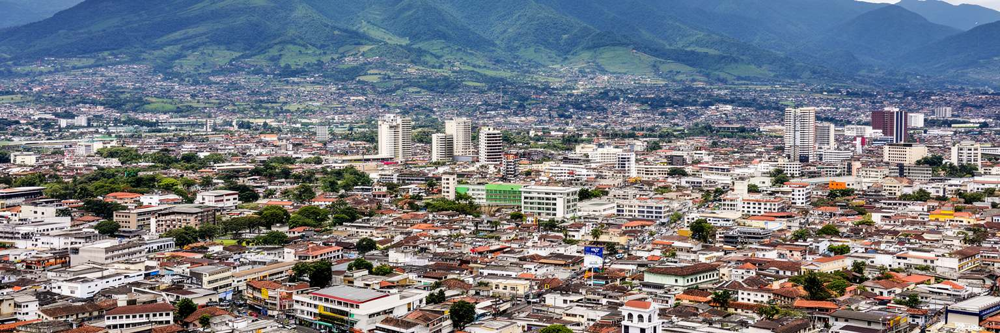
サンホセはコスタリカの安定を象徴する首都である一方、移民と格差が最も見えやすい場所でもあります。近隣のニカラグアから来た人々は、建設、家事、警備、清掃、農業、飲食、介護、露店などで都市と国の生活を支えています。政治危機や貧困から逃れてきた人、長く定住した家族、国境を行き来する労働者が混在し、学校や病院、住宅市場、宗教施設、公共交通の中でコスタリカ社会と結びつきます。移民はしばしば治安や雇用をめぐる不安の対象にされますが、実際には首都圏の多くの仕事が移民の労働なしに成り立ちません。市内や周辺には非公式居住地、低所得地区、老朽住宅があり、きれいな観光イメージとは違う都市の周縁が広がります。貧困は所得だけでなく、住所、在留資格、学校へのアクセス、医療、言語、差別、交通費として現れます。サンホセが平和で環境先進的な国の顔であり続けるには、移民を一時的な労働力として扱うのではなく、住民として制度へ組み込む必要があります。都市の格差は、都心の歩道、バス停、学校、病院、家賃に現れるため、抽象的な政策では隠せません。移民の子どもが安心して学べるか、労働者が搾取されずに住めるかが、首都の成熟を測る基準になります。移民の存在を治安の語彙だけで語ると、介護、清掃、建設、飲食を支える手が見えなくなります。都市の公正さは、見えにくい労働を住民の権利へつなげられるかにあります。
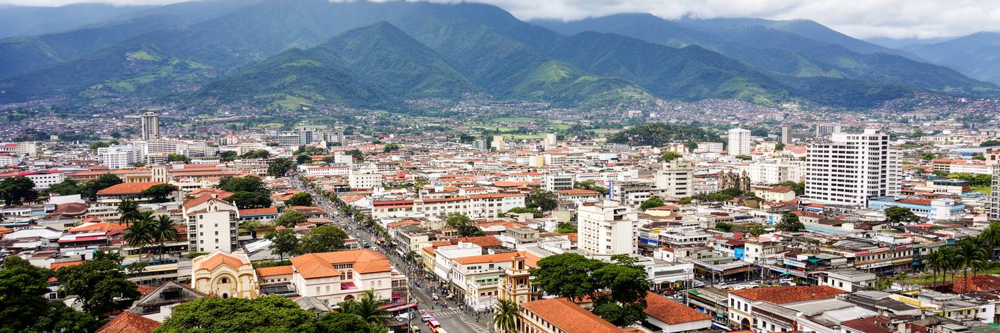
サンホセ首都圏の生活は、バス、自家用車、タクシー、徒歩、限られた都市鉄道に強く依存します。中央盆地の都市が互いに近いことは便利に見えますが、道路は混みやすく、朝夕の渋滞は通勤時間、空気、家族の生活を圧迫します。都心には複数のバスターミナルがあり、国内各地へ向かう路線と首都圏の通勤路線が絡みます。鉄道や高速公共交通の整備が十分でないため、郊外の住宅地や企業団地が広がるほど、車とバスの負担は増えます。歩道の質、横断の安全、雨季の排水、夜間の照明は、観光客だけでなく毎日移動する住民にとって重要です。都市拡大は農地や緑地を住宅、モール、道路へ変え、谷の水循環と景観にも影響します。空港へ向かう動線、医療機器企業の郊外立地、大学や病院への通勤が重なり、交通政策は経済政策と切り離せません。便利な首都圏を作るには、車を増やすだけでなく、信頼できる公共交通、歩ける都心、乗り換えしやすいバス網、低所得者にも届く運賃が必要です。サンホセの都市問題は、人口規模よりも移動の設計にあります。小さな市域の外へ生活圏が広がったため、行政境界を越えた調整が欠かせません。谷全体を一つの都市として扱えるかが、渋滞と格差を軽くする鍵になります。通勤が長くなるほど、家族の食事、学習、介護、休息の時間が削られます。交通改善は道路の話に見えて、実際には生活時間を取り戻す社会政策でもあります。
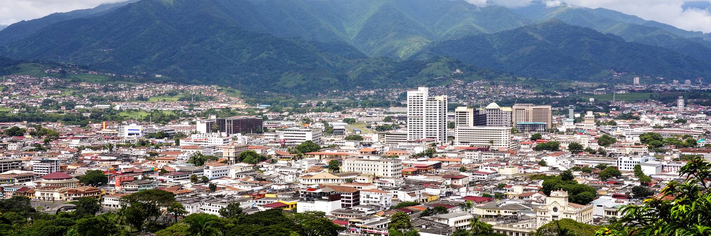
コスタリカ観光は海岸、熱帯雨林、雲霧林、火山、野生生物の印象が強く、サンホセはしばしば通過点として扱われます。しかし実際には、国際空港、国内バス、旅行会社、ホテル、博物館、銀行、保険、医療、行政手続きが首都圏に集まり、自然観光を支える見えない基盤になっています。ポアス火山、イラス火山、コーヒー農園、カルタゴ、サルチ、太平洋岸やカリブ海岸へ向かう旅は、サンホセの交通とサービスを通じて組み立てられます。都心の国立劇場、中央市場、博物館を歩けば、環境国家のイメージだけでなく、都市の歴史、労働、食、政治も見えてきます。観光の成功は自然保護区だけで決まりません。首都の治安、歩きやすさ、宿泊、交通案内、廃棄物処理、労働条件が、旅行者の経験と住民の生活を同時に左右します。エコツーリズムは国の誇りですが、訪問者が増えるほど、交通渋滞、価格上昇、地域負担、自然への圧力も大きくなります。サンホセを観光の玄関口として読むと、自然と都市が別々ではないことが分かります。自然を守る制度、ガイドの仕事、都市の宿、空港の物流、食材の供給が一つにつながっているからです。首都の役割は、旅を始める場所であると同時に、自然保護の価値を社会の仕事へ変える場所でもあります。旅行者が一泊だけで通過する都市にも、国立公園の安全、ガイドの技能、保険、医療対応を準備する仕事があります。自然の入口を支える都市労働も観光資源の一部です。
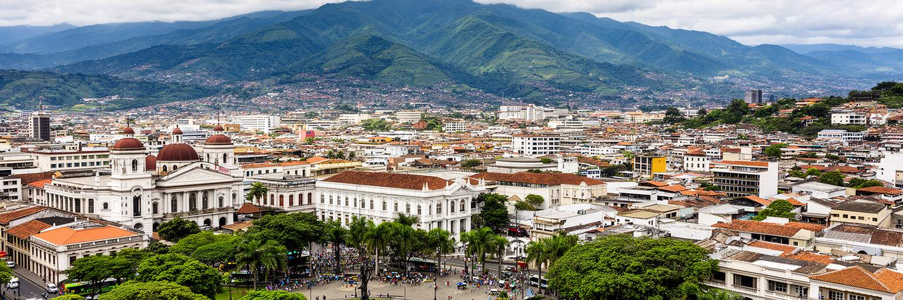
サンホセは中米の中では安定した首都として知られますが、都心の治安と公共空間には複雑な焦点があります。昼の歩行者通りや市場周辺は活気がありますが、夜になると人通りが減り、観光客にも住民にも注意が必要な区域があります。置き引き、薬物、ホームレス、路上生活、老朽建築、空き店舗、照明不足は、都市の印象だけでなく住民の移動や商売にも影響します。治安を警察だけで考えると、貧困や排除の問題を見落とします。安心して歩ける都市には、住宅、雇用、医療、依存症支援、公共トイレ、照明、歩道、文化施設、商店の継続が必要です。都心の広場や公園は、市民の休息、政治集会、祭り、路上演奏、待ち合わせの場ですが、管理が強すぎると弱い立場の人を追い出すだけになります。観光都市として整えることと、住民の居場所を守ることの両立が問われます。国立劇場や博物館の周辺を美しくするだけでは、都市全体の安全は高まりません。バスターミナル、低所得地区、学校への通学路、市場の裏通りまで含めて、公共空間をどう共有するかが重要です。サンホセの治安問題は、国の平和イメージを否定するものではなく、平和を日常の街路で維持する難しさを示しています。歩ける街を取り戻すことは、民主主義の都市的な基盤でもあります。人が通りに残り、店が開き、公共施設が使われるほど、街は監視ではなく関係によって安全になります。治安対策は社会政策でもあります。
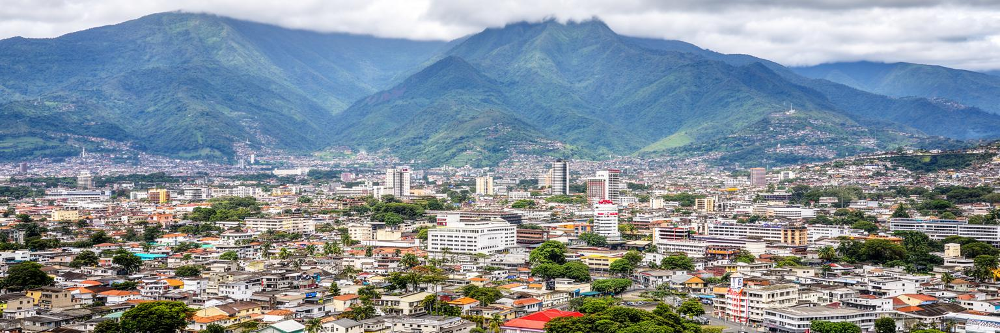
サンホセの気候は熱帯高地らしく、暑さよりも雨季と乾季、朝晩の涼しさ、盆地の空気が生活を形作ります。雨季には短時間の強い雨が道路、排水、斜面、河川に負荷をかけ、低地や不十分な排水の地区では浸水や土砂の被害が起こります。周囲には火山があり、コスタリカ全体が地震帯にあります。美しい山並みと国立公園の近さは、同時に火山灰、地震、土砂災害、道路寸断のリスクも意味します。都市化が進むと、舗装面が増え、雨水の行き場が減り、川沿いの低所得地区ほど被害を受けやすくなります。気候リスクは自然現象だけではなく、どこに住めるか、家の構造が安全か、情報を受け取れるか、避難できるかという社会の条件です。サンホセの強みは教育水準や制度の安定にありますが、防災では自治体間の連携、インフラ投資、貧困地区への支援が欠かせません。環境先進国という評判は、森林保護や再生可能エネルギーだけでなく、首都の排水、公共交通、廃棄物、河川管理にも表れる必要があります。雨のあとに渋滞し、歩道が使いにくくなり、住宅地が孤立するなら、環境政策はまだ生活へ届いていません。気候と防災を都市の基本サービスとして扱うことが、中央盆地の暮らしを守ります。火山や地震への備えは観光地の安全にも直結します。学校、ホテル、病院、バスターミナルが同じ情報を共有できるかが、災害時の回復力を左右します。
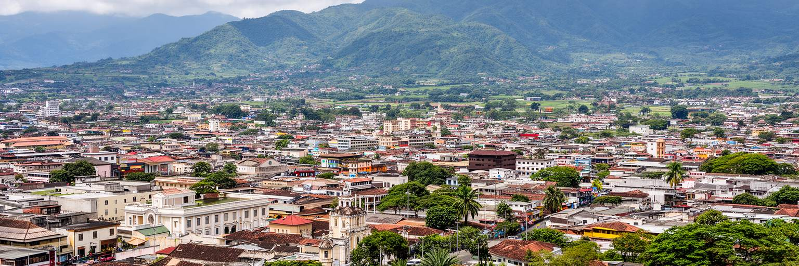
サンホセは世界の巨大金融都市ではありませんが、中央アメリカを読むうえで重要な首都です。軍を持たない国家の制度、環境政策、教育、医療、観光、医療機器産業、移民、格差、治安、交通が、中央盆地の限られた空間に集まっています。コスタリカは自然保護と民主主義の成功例として語られますが、その物語は首都の市場、バスターミナル、大学、郊外の企業団地、低所得地区、教会、病院で毎日試されています。サンホセを見ると、平和国家のイメージが、警察、社会保障、学校、公共交通、移民労働、住宅政策に支えられていることが分かります。国立劇場の優雅な建築と中央市場の食堂、医療機器企業の輸出と露店の商い、火山観光と都心の治安不安は、別々の都市ではなく同じ首都の表情です。観光客は海岸や雲霧林へ急ぎがちですが、サンホセに立ち止まると、コスタリカがどのように国家を運営し、どの問題を抱え、どの人の労働で豊かさを保っているのかが見えてきます。この都市の価値は、派手なスカイラインよりも、制度と生活の接点にあります。平和、自然、民主主義を都市の日常へ落とし込めるかが、サンホセの世界的な意味になります。中央盆地の小さな市域を越えて、郊外、空港、火山、港、国境まで結ぶ視点を持つと、この首都の静かな重要性が見えてきます。制度の信頼を暮らしの安心へ変える力こそ、サンホセを読む核心です。